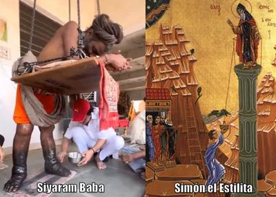

Recientemente se viralizó el caso del asceta hindú Dulal Giri Ji Maharaj, conocido también como Siyaram Baba, quien asegura llevar más de doce años sin sentarse ni acostarse, como parte de un voto que hizo para «ver a Dios». Para dormir utiliza telas que sostienen su cuerpo mientras permanece de pie, y continúa así para comer, descansar e incluso para ir al baño. Sin embargo, después de más de una década de descomunal sacrificio, «Dios» sigue sin manifestársele.


Pero lo más llamativo no es sólo el sufrimiento físico, sino la idea que lo sostiene: la creencia de que un supuesto «Dios» se siente complacido cuando una persona se priva deliberadamente del descanso, del placer y de necesidades básicas. La pregunta surge sola: ¿qué clase de Ser Supremo exigiría algo así?
Y aunque este caso proviene del hinduismo, la idea de que el dolor acerca a lo divino no es exclusiva de esa religión. El cristianismo desarrolló durante siglos una auténtica cultura del sufrimiento. El libro de Job presenta a un hombre que pierde sus hijos, bienes y salud, sufriendo al extremo injustamente, sólo por demostrar su «fidelidad» a su supuesto creador, quien se habría sentido satisfecho por tal sufrimiento. Ya en el Nuevo Testamento, Jesús se encarga de enaltecer el sufrimiento: «Bienaventurados los que lloran, porque ellos recibirán consolación» (Mateo 5:4, Lucas 6:21). Y de hecho, también Pablo de Tarso menciona en sus epístolas: «Pero los que son de Cristo han crucificado la carne con sus pasiones y deseos» (Gálatas 5:24).
A partir de esas absurdas ideas surgió una larga tradición de ayunos extremos, abstinencia sexual, vigilias, cilicios, penitencias y autoflagelaciones. Y la expresión «mortificar la carne», llegó a interpretarse como un camino hacia una supuesta «santidad».
Sin embargo, esta actitud supersticiosa no es nueva dentro del judeocristianismo, ya el Antiguo Testamento menciona que había personas que hacían «voto de nazareo, para dedicarse a Jehová», lo cual implicaba dejar de consumir todo lo procedente de la vid, incluyendo el vino, y dejarse crecer el cabello, así como no acercarse a ninguna persona fallecida, aunque fuera su pariente cercano (Números 6:2-5). Y los evangelios mencionan cómo Juan el Bautista llevaba una vida penitente en oración, ayuno y mortificación (Lucas 1:8-19), habiéndose retirado al desierto, donde deambulaba con su piel quemada por el sol (Mateo 3:1, Lucas 3:3), cubierto con una vestimenta de pelo de camello atada con un cinturón de cuero, y alimentándose de insectos y miel silvestre (Marcos 1:6, Mateo 3:4).
A partir de estas desquiciadas ideas surgen también los movimientos ascéticos cristianos, que han buscado «purificar el espíritu» mediante la negación de los «placeres materiales». Y dentro de esos movimientos sobresale un caso sin duda espectacular en esa competencia de estulticia: el de Simón el Estilita o Simeón Estilita el Viejo, nacido alrededor del año 388 EC en Sisan, cerca de la frontera norte de Siria en Cilicia, y fallecido en Siria en el 459, quien ingresó joven a un monasterio, y practicó penitencias tan exageradas, que terminó siendo expulsado por sus mismos compañeros monjes.
Buscando aislamiento, se retiró al desierto sirio, pero su fama atrajo multitudes. Entonces tomó una decisión extraordinaria: vivir sobre una columna. Primero una pequeña, luego otras cada vez más altas, hasta establecerse durante unos 37 años sobre una plataforma de apenas un metro de diámetro, situada a unos diecisiete metros del suelo. Allí rezaba, predicaba y recibía visitantes, mientras otros le subían agua y comida mediante una cesta. La paradoja es evidente: intentando huir del mundo, terminó convertido en una celebridad religiosa. Emperadores le pedían consejo y miles de peregrinos viajaban para verlo.
¿Pero cómo explicar conductas así? La psicología moderna sugiere varios mecanismos, aunque sería irresponsable diagnosticar retrospectivamente a personajes históricos. Uno es la culpa religiosa. Cuando una doctrina enseña que el ser humano es profundamente «pecador» y que el sufrimiento «purifica el alma», algunas personas terminan viendo el dolor como una inversión para obtener recompensas eternas. Otro es el pensamiento mágico: la creencia de que ciertas privaciones producen efectos sobrenaturales. Bajo esa lógica, dormir menos, comer menos o sufrir más, se convierte en una especie de moneda espiritual para comprar el favor divino.
Pero también interviene el refuerzo social. Lo que desde fuera parece absurdo, dentro de ciertos ambientes religiosos puede generar admiración. Así, cuanto más extrema es la penitencia, mayor prestigio adquiere quien la practica. El sufrimiento deja entonces de ser una experiencia privada, para transformarse en una señal pública de «santidad».
Además, la psicología conoce bien el fenómeno de la escalada del compromiso: cuando alguien ha invertido enormes sacrificios en una creencia, resulta muy difícil admitir que quizá no tenían sentido. Así que en vez de abandonar la práctica, muchas veces la intensifica.
Hay, sin embargo, un aspecto especialmente triste en historias como las de Siyaram Baba o Simón el Estilita: cada ser humano dispone de una sola vida. Una única oportunidad para aprender, amar, crear, viajar, hacer ciencia, producir arte, disfrutar de la naturaleza o simplemente contemplar un atardecer. Sin embargo, Simón pasó casi cuatro décadas sobre una plataforma de piedra, por lo que es difícil no preguntarse cuántas experiencias humanas perdió, convencido de que su «Dios» recompensaría aquel sacrificio. Por tanto, la tragedia no es sólo el sufrimiento físico; es haber orientado toda una existencia hacia una promesa cuya realidad nunca pudo demostrarse.
Pero existe además otra dimensión poco mencionada: el asceta extremo depende por completo de los demás. Ni Siyaram Baba ni Simón cultivaron alimentos, produjeron bienes o desarrollaron conocimientos prácticos. Sobrevivieron gracias al trabajo de otros creyentes que los alimentaron mientras admiraron su supuesta santidad.
Desde el punto de vista social, el asceta deja de participar activamente en la construcción de la comunidad, y pasa a depender de ella para sostener una forma de vida que no genera beneficios materiales ni científicos. Lo que sí produce es prestigio simbólico dentro del grupo religioso. Y paradójicamente, cuanto menos útil resulta una práctica en términos prácticos, más admirable puede parecer en ciertos contextos religiosos.
Al final la cuestión de fondo permanece: si un «Dios» realmente exige que sus fieles destruyan lentamente su salud para agradarle, la imagen que proyecta dista mucho de la de un padre amoroso. Un padre disfruta viendo crecer a sus hijos, no contemplando cómo se dañan para demostrar devoción. Por eso resulta difícil no pensar que el problema quizá no sea la existencia de un «Dios» masoquista, sino que ciertos seres humanos, movidos por tradiciones religiosas, culpa, expectativas sobrenaturales y una intensa necesidad de encontrar sentido, terminan atribuyendo a su divinidad deseos que probablemente nacieron de la propia cultura humana.
La realidad es que la historia de Simón el Estilita no demuestra que «Dios» disfrute del sufrimiento. Lo que sí demuestra es hasta dónde puede llegar una persona cuando está convencida de que el dolor es el camino más corto hacia un inexistente «más allá». Y quizá sea esa una de las lecciones más inquietantes de toda la historia de las religiones.
[Godless Freeman]
Comentarios
Comments powered by Disqus